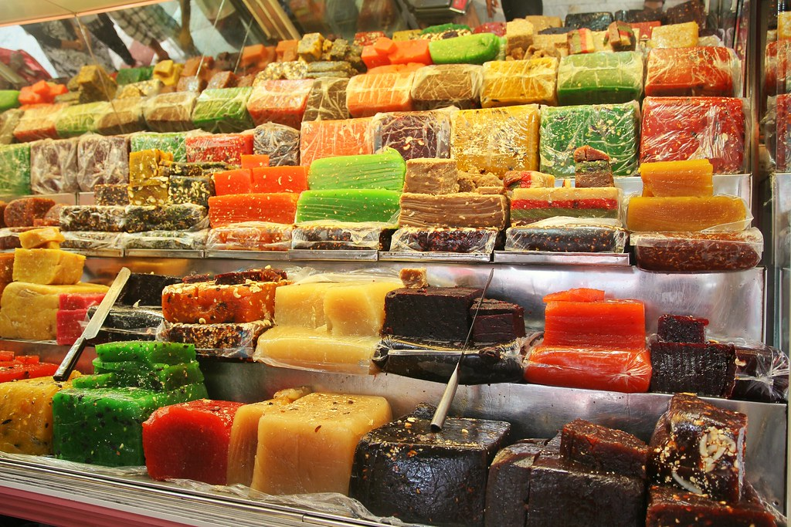

1.Kozhikode Beach
Kozhikode will always have a special place in the history of Kerala as it is here that Vasco-da-Gama first landed and the legendarySpice Route came into existence. This region still has a historic charm to it. Kozhikode Beach is the personification of the numerous characteristics that make Kozhikode so unique. People flock in large numbers to view the sunset from the beach. One gets a fresh supply of seafood in the shacks that surround the place. Kallumekaya (mussels) is a local favourite. A walk to Dolphins Point at dawn ensures a meeting with playful dolphins. You are also greeted by a majestic lighthouse and two piers opening into the sea. Both have been here for over a hundred years. Children flock to Lions Park and the nearby marine water aquarium which is open on all days from 08:00 hrs to 20:00 hrs.

2.Mananchira Square
At the heart of Kozhikode city is every urban dweller’s paradise. It is constructed around the Mananchira tank. This huge artificial pond built by the Zamorin King, Mana Vikrama, is fed by a natural spring. The area around the tank has been converted into a park, landscaped with trees, plants and lawns. A picturesque park with beautiful lawns, a musical fountain, traditional Kerala-style buildings and the nearby Kozhikode Public Library make Mananchira Square among the most visited spots in the area. One must also never forget the Mananchira Tank that surrounds it, preserved in its original form since the time of the last Zamorin ruler who built it, Manavikrama. Go for picnics, strolls or just a glimpse of the cultural heritage of a city, situated at its very centre.

3.Beypore Beach
Beypore beach is an ideal beach destination for tourists as well as of historians. Located at the mouth of river Chaliyar about 10 kilometres away from Kozhikode town (Calicut) in Kerala, Beypore was a port of trade and maritime centre in the olden ages. This ancient port had witnessed much trade and transactions of the Arabian merchants from West Asia, Chinese travellers and later Europeans with the local dealers here. One of the major attractions of this place is the existence of the 1,500 years old tradition of shipbuilding industry. Beypore beach also happens to be an important commercial center for building the ships. While the city is also famed for its unique shipping vessel called “Uru”, do not miss out on going for a ride on the famous two-kilometre long Pulimoodu bridge.

4.Kakkayam
Kakkayam is a stunning dam site in Kozhikode that is famous for its trekking trails and boating options. This lesser-known spot gives one the opportunity to explore some exquisite trails that are sprinkled around the area. Boating rides here give one an exclusive view of the dam area along with a bunch of small waterfalls and dense forests. Kakkayam is on the outskirts of the Western Ghats, and Malabar Wildlife Sanctuary, a 7,421-hectare abode of wild animals including elephants and bisons. Kakkayam has an abundant wildlife population and is also a trekking and rock climbing destination It is the perfect place to have a quiet secluded picnic with your loved ones.
5.Sweet Street
Street food is among the most gorgeous innovations in the culinary sphere, and people flock to them to taste the original and raw flavour that one can only get here. The legendary Sweet Meat Street or Mithai Theruvu is the go-to place for such delicacies in Kozhikode district. Named from the times when the street was lined with sweet-meat (halwa) stalls, it is today a popular haunt for locals and tourists alike. Row upon row of stalls, peppered with sweets and savouries and a bunch of other delights, make it among the busiest streets in the entire district. It is one of the busiest places in Kozhikode and remains open until 9 PM. With an enormous variety of sweets and other delicacies, this place is truly a retreat for food-lovers.